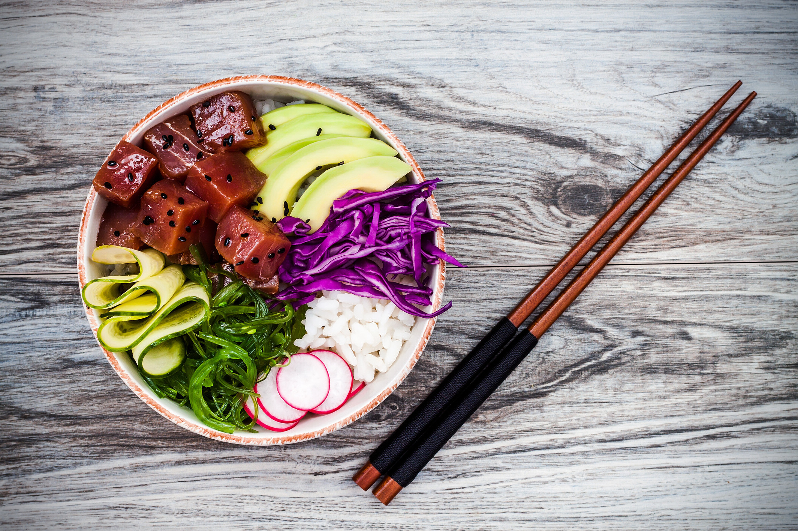

The dish was created out of a mistake made by a fourteen year-old assistant waiter
Henri Carpentier (1880-1961) in 1895 at the Maitre at Monte Carlo's Cafde Paris.
He was preparing a dessert for the Prince of Wales,
the future King Edward VII (1841-1910) of England.